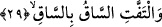
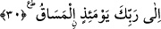
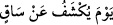

29. Ve bacak bacağa dolaşır.
Yâni onun bir bacağı öteki bacağına dolaşır. Ölüm endişesi esnâsında onun üstüne
eğilir. “Dolaşır” şeklinde tercüme edilen “iltifâf” bacakların bir arada toplanması ve
bir diğeri üzerine eğilmesi demektir.
Âyet-i kerîmeyi bu şekilde tefsir etmek mümkün olduğu gibi, dünyadan ayrılmanın
şiddeti, âhirete yönelmenin şiddeti ile birbirine karışır, şeklinde anlamak da
mümkündür. Öte yandan “bacak” diye tercüme edilen “sâk” şiddet anlamını ifâde etmek
için bir benzetmedir. Mecâzî mânâda benzetme yönü şudur: İnsanın başına aniden güç
bir durum gelince onunla baş edebilmek için insan hemen paçalarını sıvar ve gayrete
gelir. Öte yandan -Arapçada- şiddetli işe “sâk” denilir. Şöyle ki; o şiddetin zuhûru,
ortaya çıkması gayrete gelmenin, paça sıvamanın ortaya çıkmasını gerektirir. Nitekim
Kalem sûresinde “/o gün incikten açılır” (el-Kalem, 68/42) âyet-i
kerîmesinde gerekli açıklama geçmişti.
Saîd b. Müseyyeb “ve bacak bacağa dolaşır” âyet-i kerîmesiyle kasdedilenin, insan
öldüğünde kefenlenen iki bacağı olduğunu söyler.
30. İşte o gün sevkedilecek yer, sâdece Rabbinin huzûrudur.
Yâni o gün sevk, başkasına değil, sâdece Allah’a ve O’nun hükmünedir. Bir başka
ifâdeyle; insanoğlu o gün Allah’ın hükmünden başka hiçbir hükmün olmayacağı yere
sevkedilecektir.
Âyette yer alan “el-Mesâk” mimli masdar olup mânâsı sevketmek demektir. Kelimenin
başındaki elif ve lam muzâfun ileyhten ivazdır. Buna göre burada kasdedilen “insanın
sevkedilmesi” olur.
[195]. Hakim Tirmizi, Nevadiru’l-usûl, I, 101.
[196]. Nesai, sehv 62; Müsned, V, 191
[197]. Müslim, îman 291; Tirmizi, tefsir (53), 7; Müsned, V, 157, 171, 175
[198]. İbn Kesir, IV, 450
[199]. Buhari, Salat, 554; Müslim, Mesâcid, 633.
[200]. Buhari, mevakit 16; tevhid 24; Müslim, mesâcid 211-212; İbn Mace, muk. 13;
Müsned, IV, 360, 365
[201]. Münavi, VI, 180